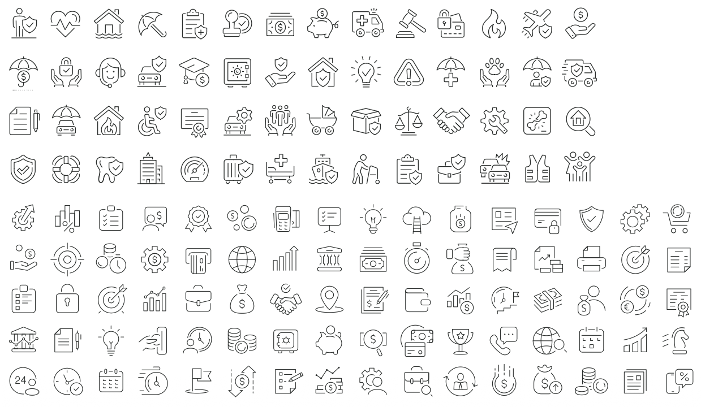

Hoja de referencia del manual, no assets utilizables: los vectores no se pudieron extraer del PDF. Trazo fino (~1,25–1,5), esquinas y extremos redondeados, grilla de 24px, y un motivo recurrente de glifo compuesto — objeto principal más una insignia pequeña (✓ en escudo, $ en moneda). Dominios: seguros, banca, pagos, ahorro, trámites, atención de usuarios. Pide los SVG a AreaComunicacionCMF@cmfchile.cl.